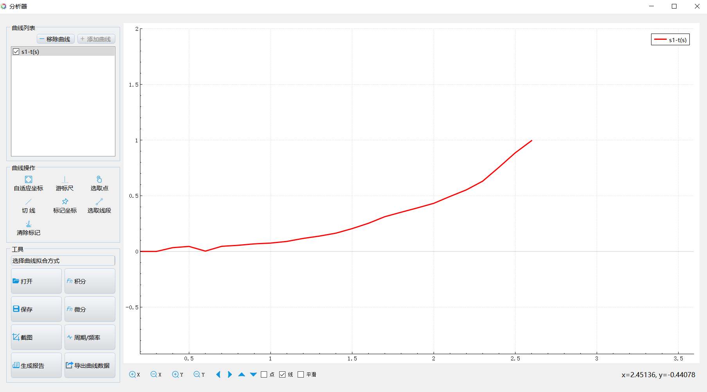
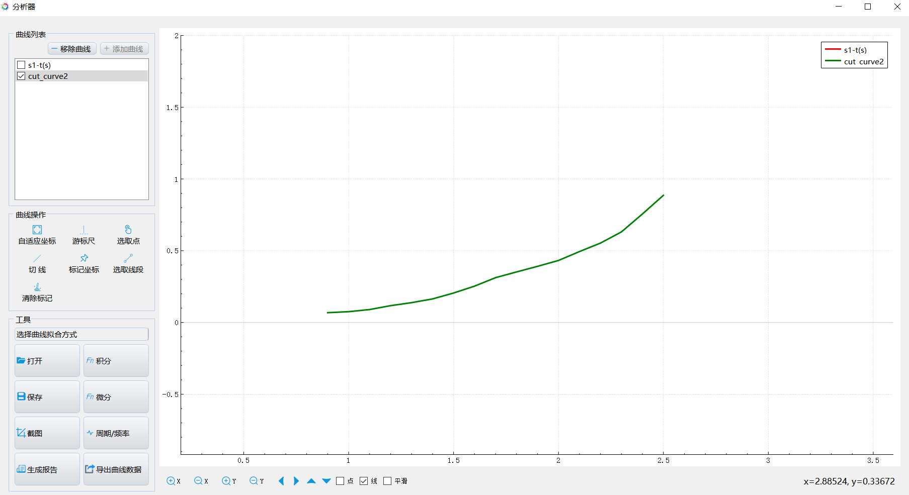
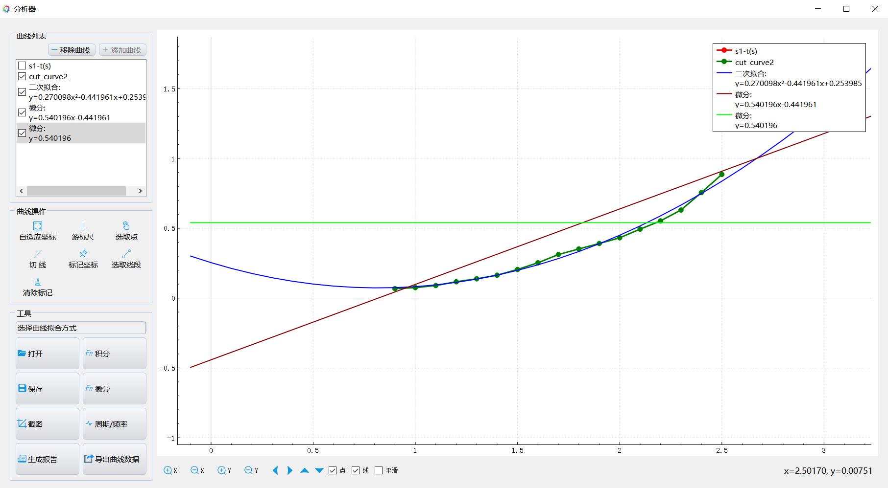

实验十一 探究匀变速直线运动的特点
【实验目的】
掌握根据匀变速直线运动的位移－时间图像求平均速度以及根据匀变速直线运动的“速度—时间”图像求匀变速直线运动的加速度的方法。
【实验原理】
物体的速度变化快慢用加速度来描述。加速度等于物体速度的变化（νt-ν0）与完成这一变化所用时间t的比值，即a＝(νt-ν0)／t ，因此加速度实际上就是速度的变化率。
匀变速直线运动是加速度不变的直线运动，其“速度—时间”图像是一条倾斜的直线，我们可在这条倾斜的直线上任取两个不同点，其坐标分别为（t1，v1）和（t2，v2），即从t1时刻到t2时刻，物体的速度从v1变化到v2 。根据加速度的定义可知，物体的加速度等于速度的变化（v2－v1）和变化所用的时间（t2－t1）的比值，即作匀变速直线运动的物体其加速度在“速度—时间”图像中是通过图像的斜率来表示的。
【实验器材】
数据采集器、一体位移发射器、一体位移接收器、多用力学导轨实验器和计算机等。
【实验装置】

【实验操作步骤】
1.搭建好实验环境，将运动传感器发射端固定在导轨一端，将运动传感器反射端固定在小车上；
2.打开实验数据分析软件，连接好数据采集器和运动传感器；
3.将小车放到轨道上，调整发射端与反射端的距离，将运动传感器“调零”
4.把细绳系在小车上，细绳绕过滚轮，下端挂一个合适的砝码；
5.打开“表格视图”，点击“采集”，将小车从导轨一端释放；
6.当小车运动到导轨另一端时点击“暂停”按钮，然后点击“数据分析”，做出小车的“位移—时间”曲线；
7.选择运动过程的实验数据，对其进行“微分”处理，得到“速度——时间”曲线；
8.对“速度——时间”曲线进行“微分”处理，得到“加速度——时间”曲线；
9.改变下挂的砝码，多次实验，比较每次实验的速度和加速度；
10.实验结束，整理实验器材。

位移-时间 曲线

选取线段

数据处理（拟合、微分、再微分）
【思考与讨论】
1.根据实验数据，哪一次的速度变化要快一些，判断依据是什么？
2.加速度的大小是由哪些因素决定的？
【自由探究】
运用图像分析器中的拟合等功能，我们可以对实验中得到的位移－时间图像和速度－时间图像进行分析，确定匀变速直线运动中位移、速度和时间的关系。动手试一试。